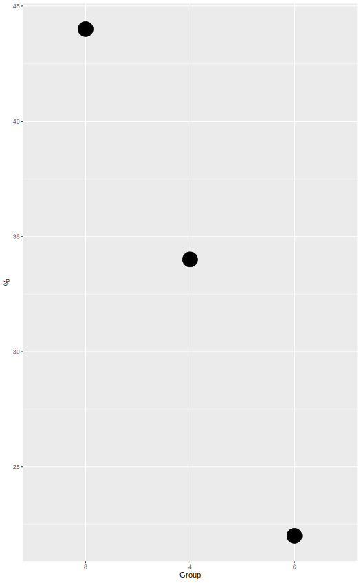

Describe data sets with multiple variable types effectively.
describe_all( data, digits = 2, include_NAcat = TRUE, max_levels = 10, include_numeric = FALSE, NAcat_include = NULL, sort_by_freq = TRUE, ... ) describe_all_num(data, digits = 2, ...) describe_all_cat( data, digits = 2, include_NAcat = TRUE, max_levels = 10, include_numeric = FALSE, sort_by_freq = TRUE, as_ordered = FALSE )
| data | The dataset, of class data.frame. |
|---|---|
| digits | See [base::round()]. Default is 2, which for categorical is applied to the proportion (i.e. before converting to percentage). |
| include_NAcat | Include NA values as categorical levels? Default is
|
| max_levels | The maximum number of levels you want to display for categorical variables. Default is 10. |
| include_numeric | For categorical summary, also include numeric
variables with unique values fewer or equal to |
| NAcat_include | Deprecated alias of |
| sort_by_freq | Sort categorical levels by frequency? Default is
|
| ... | Additional arguments passed to |
| as_ordered | Return the categorical results with the levels as ordered. See details and example. |
A list with two elements of summaries for numeric and other variables respectively. Or the contents of those elements if the type-specific functions are used.
This function comes out of my frustrations from various data set summaries either being inadequate for my needs, too 'busy' with output, or unable to deal well with mixed data types.
Numeric data is treated separately from categorical, and provides the same
information as in num_summary.
Categorical variables are defined as those with class 'character', 'factor',
'logical', 'ordered', combined with include_numeric. They are are
summarized with frequencies and percentages. For empty categorical
variables (e.g. after a subset), a warning is thrown. Note that max_levels
is used with top_n, and so will return additional values when
there are ties.
The as_ordered argument is to get around the notorious alphabetical
ordering of ggplot. It returns a data.frame where the 'data' column
contains the frequency information of the categorical levels, while leaving
the levels in order (e.g. decreasing if sort_by_freq was
TRUE). This way you can directly plot the result in the manner
you've actually requested. See the example.
The functions describe_all_num and describe_all_cat will
provide only numeric or only categorical data summaries respectively.
describeAll is a deprecated alias.
#> #>#> #> #>#> #> #>X = data.frame(f1 =gl(2, 1, 20, labels=c('A', 'B')), f2=gl(2, 2, 20, labels=c('X', 'Q'))) X = X %>% mutate(bin1 = rbinom(20, 1, p=.5), logic1 = sample(c(TRUE, FALSE), 20, replace = TRUE), num1 = rnorm(20), num2 = rpois(20, 5), char1 = sample(letters, 20, replace = TRUE)) describe_all(X)#> $`Numeric Variables` #> # A tibble: 3 x 10 #> Variable N Mean SD Min Q1 Median Q3 Max `% Missing` #> <chr> <dbl> <dbl> <dbl> <dbl> <dbl> <dbl> <dbl> <dbl> <dbl> #> 1 bin1 20 0.3 0.47 0 0 0 1 1 0 #> 2 num1 20 0.01 0.99 -1.91 -0.44 0.05 0.54 1.89 0 #> 3 num2 20 4.95 2.42 1 3 5 6 12 0 #> #> $`Categorical Variables` #> # A tibble: 19 x 4 #> Variable Group Frequency `%` #> <chr> <fct> <int> <dbl> #> 1 f1 A 10 50 #> 2 f1 B 10 50 #> 3 f2 Q 10 50 #> 4 f2 X 10 50 #> 5 logic1 TRUE 12 60 #> 6 logic1 FALSE 8 40 #> 7 char1 a 2 10 #> 8 char1 e 2 10 #> 9 char1 f 2 10 #> 10 char1 g 2 10 #> 11 char1 l 2 10 #> 12 char1 m 2 10 #> 13 char1 q 2 10 #> 14 char1 b 1 5 #> 15 char1 n 1 5 #> 16 char1 r 1 5 #> 17 char1 s 1 5 #> 18 char1 v 1 5 #> 19 char1 z 1 5 #>#>#> $`Numeric Variables` #> NULL #> #> $`Categorical Variables` #> # A tibble: 7 x 4 #> Variable Group Frequency `%` #> <chr> <fct> <int> <dbl> #> 1 x 1 1 14.3 #> 2 x 2 1 14.3 #> 3 x 3 1 14.3 #> 4 x 4 1 14.3 #> 5 x 5 1 14.3 #> 6 x 6 1 14.3 #> 7 x 7 1 14.3 #>describe_all(mtcars, digits=5, include_numeric=TRUE, max_levels=3)#> $`Numeric Variables` #> # A tibble: 11 x 10 #> Variable N Mean SD Min Q1 Median Q3 Max `% Missing` #> <chr> <dbl> <dbl> <dbl> <dbl> <dbl> <dbl> <dbl> <dbl> <dbl> #> 1 mpg 32 20.1 6.03 10.4 15.4 19.2 22.8 33.9 0 #> 2 cyl 32 6.19 1.79 4 4 6 8 8 0 #> 3 disp 32 231. 124. 71.1 121. 196. 326 472 0 #> 4 hp 32 147. 68.6 52 96.5 123 180 335 0 #> 5 drat 32 3.60 0.535 2.76 3.08 3.70 3.92 4.93 0 #> 6 wt 32 3.22 0.978 1.51 2.58 3.32 3.61 5.42 0 #> 7 qsec 32 17.8 1.79 14.5 16.9 17.7 18.9 22.9 0 #> 8 vs 32 0.438 0.504 0 0 0 1 1 0 #> 9 am 32 0.406 0.499 0 0 0 1 1 0 #> 10 gear 32 3.69 0.738 3 3 4 4 5 0 #> 11 carb 32 2.81 1.62 1 2 2 4 8 0 #> #> $`Categorical Variables` #> # A tibble: 10 x 4 #> Variable Group Frequency `%` #> <chr> <fct> <int> <dbl> #> 1 cyl 8 14 43.8 #> 2 cyl 4 11 34.4 #> 3 cyl 6 7 21.9 #> 4 vs 0 18 56.2 #> 5 vs 1 14 43.8 #> 6 am 0 19 59.4 #> 7 am 1 13 40.6 #> 8 gear 3 15 46.9 #> 9 gear 4 12 37.5 #> 10 gear 5 5 15.6 #>library(ggplot2) freqs = describe_all_cat(mtcars, include_numeric=TRUE, max_levels=3, as_ordered = TRUE) freqs %>% filter(Variable == 'cyl') %>% tidyr::unnest() %>% ggplot(aes(x=Group, y=`%`)) + geom_point(size = 10)#> Warning: `cols` is now required when using unnest(). #> Please use `cols = c(data)`